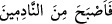

vefatından sonra onun yerine itikâfta bulunmuş ve bir de köle âzâd etmiştir.”
Sa’d (r.a.) de Nebi (s.a.)’e: “Annem vefat etti. Onun yerine tasaddukta bulunayım
mı?” diye sorduğunda Rasûlullah (s.a.): “Evet” diye cevap verince Sa’d: “Hangi
sadaka en faziletlidir?” diye sormuş, o da “Su vermektir” diye karşılık vermiştir. Bunun
üzerine bir kuyu kazarak onu Allah yolunda vakfetmiştir.[116]
Kurtubî de Tezkire’sinde der ki: Bu âyetin sadece seyyieye/günaha) hasredilmiş
olması da muhtemeldir. Zira şu kudsî hadis bunu te’yid eder: “Allah şöyle
buyurmuştur: Kulum bir iyilik düşünüp de onu îfâ etmezse, o iyilik on ile yedi yüz kat
sevap arasında kendisi için yazılır. Eğer bir kötülük düşünüp de onu îfâ etmezse ona
günah yazmam, ancak işlediği takdirde sadece bir günah yazarım.”[117]
Kur’ân-ı Kerim ileri sürülen bu görüşü desteklemektedir. Zira Allah Teâlâ: “Kim
iyilik getirirse, ona o (getirdiği)nin on katı vardır.” (el-En’âm 6/160) buyurmuştur.
Bu ve benzeri âyetler, insanın başkasının yaptığı amelden faydalanmasının, Allah’ın bir
lütfu ve adâletiyle tahakkuk ettiğine işâret etmektedir. “İnsana çalışmasından başka
bir şey yoktur” demek; ancak Allah Teâlâ’nın o kimseye kendi fazlı ile hak etmediğini
vermesi anlamındadır. Nasıl ki Allah kat kat kendinden bir lütuf olarak bir iyiliğe karşı
on sevaptan yedi yüze, oradan da milyona kadar mükâfâtlandırıyorsa, çocukları da
amelsiz olarak babaları sebebiyle cennete girdirmesi, O’nun keremindendir. Netice
olarak diyebiliriz ki kişinin kendi çalışmasının karşılığını alması, Allah’ın adâleti ve
mükâfâtı gereğince; çalışmasının dışında elde ettiği kazanç da Allah’ın ihsânı ve
sevaplarının katlanması sebebiyledir. Allah Teâlâ’nın lütfu bundan daha geniş ve daha
büyüktür. Zira o iyiliklerin sevaplarını kat kat yapar ve günahları affeder.
Nefis, tabîat (mizaç), şerîat ve tarikat mertebeleri birinci nev’indendir. Yâni kişinin
kendi emeğiyle çalışmasının karşılığını almasındandır. Ruh, sır, ma’rifet ve hakikat
mertebeleri de ikinci nevidendir. Yâni Allah’ın lutfunu kat kat vermesi türündendir.
el-Es’iletü’l-mufhime’de der ki: “Bu âyet-i kerîme şerîat hükmünde mâlum olan
necâtın aslına işâret etmektedir. Zira kitap ve sünnette amel-i sâlihle vaadolunan asli
kurtuluş, mücâzat ve mükâfât şartına bağlanmış kurtuluştur. Mücâzat karşılığını verme
ve mükâfât şekliyle olanın dışındaki necat ise; Allah Teâlâ’nın fazlı, ihsânı, rahmetinin
şümûliyeti, kerem ve lütfuyladır. Bu tür necâtı Rasûlullah (s.a.) şu hadisiyle beyân
etmiştir: “Şefâatimi ümmetimin büyük günah sâhipleri için sakladım. Siz bu
şefâatimin müttakî mü’minler için olduğunu mu sanırsınız? Hayır, böyle değildir.
Şefâatim günah kirleriyle kirlenmiş olan günah sâhipleri içindir.”[118] Kur’ân-ı
Kerim’in değişik âyetleri ve Rasûlullah (s.a.)’in hadisleri bu kanâati te’yid eder.
İmam Ebû Bekir Fârisî’nin Semerkand’da şöyle dediğini işittim: “Üstad Ebû İshak
el-İsferânî’yi şöyle konuşurken duydum: “Horasan valisi Abdullah b. Tahir, Hasan b.
Fadl el-Becelî’ye üç âyeti anlamakta zorluk çekmekteyim. Senin bunları yorumlayıp
açmanı ve hastalığı tedavi etmeni arzu ediyorum. Bunların birincisi Hz. Âdem (a.s.)’ın
çocuklarıyla ilgili kıssada buyrulan () âyetidir. Zira hadis-i şerifin sahih